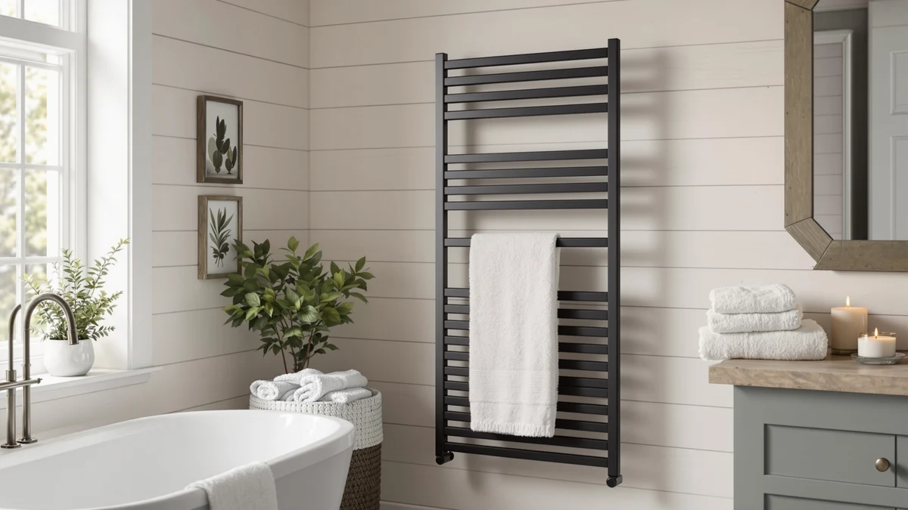

Best Towel Warmers for Estheticians of 2026: 7 Top Picks
Prices and picks verified as of August 2026. Independent, reader-supported reviews.


Quick Answer
After comparing 7 cabinets and racks, the VERYTOP Towel Warmer 5L-Black 2-in-1 ($69.99) is the best towel warmer for most estheticians. It heats a load of damp facial towels fast, fits a compact treatment room, and doubles as a small storage cabinet. If you run back-to-back clients, step up to a 23L cabinet; if budget is tight, the StateRiver 23L at $99.99 gives you the most capacity per dollar.
Our pick: VERYTOP Towel Warmer 5L-Black 2-in-1, $69.99 Check Price on Amazon
Bottom line: our top pick is the VERYTOP Towel Warmer 5L-Black at $69.99. The best budget option is the VIPBATH 35L Towel Warmer for Bathroom at $64.99.
Things to Know Before You Buy
- Capacity drives the choice. A 5L cabinet suits one esthetician working solo; 23L and 35L cabinets keep up with back-to-back facials so you never run out of hot towels mid-treatment.
- Cabinet vs. rack. Cabinets steam damp towels for hot compresses. Freestanding bar racks like the Sawlece warm and dry towels and robes on display, but they will not hold a wet towel at compress temperature.
- Stainless steel interior matters. Every pick here uses a stainless steel body, which wipes clean and resists the daily moisture and product residue of a treatment room.
- Price spans a wide range. The best towel warmers for estheticians in this guide run from $52.24 for the high-capacity VIPBATH to $149.99 for the freestanding Sawlece.
- Plan for heat-up time. Small cabinets are ready in about 15 to 30 minutes; large cabinets take longer, so switch them on at the start of your shift.
The best towel warmers for estheticians turn an ordinary facial into the kind of treatment clients book again. A warm towel relaxes the face and opens the pores before extraction, then lifts off cleanser and masks without the scrape of a cold cloth. If you run a treatment room, your warmer is going from the first appointment to the last, so it has to heat fast and hold that heat through hours of constant wiping and moisture.
We pulled together 7 towel warmers that estheticians actually buy, from a compact 5L cabinet to a 35L unit and a freestanding heated rack. We compared capacity, build, price, and how each one fits the rhythm of a working room. Our pick for most estheticians is the VERYTOP Towel Warmer 5L-Black 2-in-1 at $69.99, which heats a load of damp towels quickly and tucks into a small space without dominating the room.
That said, no single warmer fits every practice. A solo esthetician doing two or three facials a day has different needs from a busy multi-bed spa, and someone who wants warm robes on display needs a rack, not a cabinet. Below you will find the right pick for each of those cases, with the trade-offs spelled out so you are not guessing after the box arrives.
Why You Should Trust Us
I am Ilane Tall, and I cover bath and treatment-room equipment for Best Towel Warmers. To find the best towel warmers for estheticians, I worked through manufacturer specs, the verified buyer reviews on each Amazon listing, and feedback from estheticians who use these cabinets day in and day out. I focused on the questions a working pro asks first: how many towels fit, how the interior cleans, and whether the unit holds heat through a full day of appointments.
We do not run a paid lab, and we will not pretend a warmer is flawless when buyers report a real problem. Where a cabinet has a weak hinge, a slow heat-up, or a capacity that reads larger on paper than it feels in the room, you will see it called out. Our affiliate links do not change the picks; the VERYTOP earned the top spot on its merits, not its commission.
How We Picked
To narrow the field of towel warmers for estheticians, we started with capacity, since that decides whether you reheat between clients or not. We kept cabinets ranging from 5L for solo rooms up to 35L for busy spas, plus one freestanding rack for practices that warm robes and display towels. Anything that could not safely heat a damp towel was cut, because the hot-towel compress is the whole point in esthetics.
We then filtered on build and upkeep. Every pick here has a stainless steel body that wipes clean and shrugs off the humidity of a treatment room. We checked price against capacity to find honest value, and we read the verified buyer reviews on each listing for repeat complaints about heating, hinges, and longevity. Seven warmers cleared that bar, and they cover the price range from $52.24 to $149.99.
For each towel warmer an esthetician might choose, we judged it the way a treatment room would. We looked at how fast a cabinet brings a load of damp, rolled towels up to compress temperature from cold, and whether it holds that heat across a long shift rather than fading after an hour. A warmer that needs a 30-minute restart between clients slows your whole day.
We also weighed the parts that wear out. We compared interior capacity against the towel sizes estheticians actually use, checked how the door and hinges feel on cabinets, and noted which units run quietly enough to sit in a calm room. Where buyers flagged a recurring fault, such as a warmer that struggles to reach full temperature or a latch that loosens, we treated that as a real mark against the unit instead of glossing over it.
Our Picks

VERYTOP Towel Warmer 5L-Black 2-in-1
What we like
- Compact 5L footprint fits a crowded treatment room
- 2-in-1 design adds storage below the warming chamber
- Stainless steel interior wipes clean in seconds
- Lowest entry price of any cabinet that still heats damp towels well
Flaws but not dealbreakers
- 5L holds enough for a solo esthetician, not a busy two-bed room
- You will reload it during a packed afternoon of back-to-back facials
| Material | Stainless steel |
| Size | 5L |
The VERYTOP 5L is the towel warmer we would put in most esthetician treatment rooms, and the reason is balance. At $69.99 it costs less than the salon-grade cabinets, yet it heats a load of damp, rolled facial towels to a proper compress temperature and holds them there through a string of appointments. The 5L chamber fits four to six rolled towels, which covers a solo esthetician running two or three facials in a session before a reload. The stainless steel interior is the part you touch every day, and it wipes down without staining or holding the smell of product and oils.
The 2-in-1 layout is what sets it apart from a plain bucket warmer. You get the heated chamber up top and a small storage compartment below, so a tight room gives up less floor and counter space to gear. The honest limit is capacity. If you book back-to-back clients or work a two-bed room, 5L runs dry and you will be reloading mid-shift, which is why we point heavier practices to the 23L cabinets further down. For one esthetician who wants warm towels ready without a salon-sized footprint, this is the pick.

Pursonic Professional Towel Warmer with
What we like
- Recognized professional brand with a salon-focused design
- Solid stainless steel build aimed at daily commercial use
- Holds towels at a steady, ready-to-use compress temperature
- Compact body fits alongside other treatment-room gear
Flaws but not dealbreakers
- At $143.43 it is more than double the price of our top pick
- Capacity is on the small side for the money
| Material | Stainless steel |
| Size | Small |
The Pursonic Professional towel warmer is our runner-up, and it earns that spot on build rather than size. This is a stainless steel cabinet from a brand estheticians and barbers already know, designed for the wear of a commercial room. It heats damp towels to a steady compress temperature and keeps them there, so the towel you reach for at the end of a facial feels the same as the first one of the day. If you have had cheaper warmers fail on you, the heavier construction here is the draw.
The catch is value. At $143.43 it costs more than twice our VERYTOP pick, and the chamber stays in the small range, so you are paying for the brand and the build, not extra towels. If you are a solo esthetician on a budget, that math favors the VERYTOP. But for a practice that leans on its warmer every day and wants a known professional name behind it, the Pursonic is the buy that lasts. That is why it lands in second rather than first.

VERYTOP 23L Hot Towel Warmer
What we like
- 23L chamber holds enough towels for a full day of facials
- Same VERYTOP build quality as our top pick, scaled up
- Stainless steel interior cleans easily and resists moisture
- $99.99 keeps it affordable for the capacity you get
Flaws but not dealbreakers
- Larger body needs more counter or floor space than the 5L
- Takes longer to reach full temperature from cold
| Material | Stainless steel |
| Size | 23L |
The VERYTOP 23L is the step up for estheticians who outgrow a small cabinet. It keeps the same stainless steel build and clean-wiping interior as our 5L top pick, but the 23L chamber holds a much larger stack of damp towels, enough to carry you through a day of back-to-back facials without a mid-shift reload. At $99.99 it lands between the budget cabinets and the salon-grade Pursonic, and for the capacity it is hard to fault on price.
The trade-offs are predictable for a bigger cabinet. It takes up more room, and it needs longer to come up to temperature from cold, so you switch it on at the start of your shift rather than between two clients. Work solo and do a couple of facials a day, and the 5L saves you space and money. Once your book fills up and you are tired of running out of hot towels mid-treatment, this is the VERYTOP to buy.

StateRiver Towel Warmer Cabinet 23L
What we like
- 23L capacity at the same $99.99 as smaller-feeling rivals
- Stainless steel cabinet that cleans up fast
- Straightforward operation with no fussy extras
- Strong choice for a second warmer or a backup unit
Flaws but not dealbreakers
- Lesser-known brand than VERYTOP or Pursonic
- Plain styling that leans practical over polished
| Material | Stainless steel |
| Size | 23L |
The StateRiver 23L cabinet is our budget pick because it gives estheticians the most towel capacity for the least money. At $99.99 you get a full 23L stainless steel chamber, the same size as the VERYTOP 23L, in a no-frills package. It heats damp towels for facials and holds them ready, and the interior wipes clean like the pricier cabinets. For a treatment room where the warmer just needs to work, that is the whole job done.
What you give up is brand familiarity and styling. StateRiver does not carry the recognition of VERYTOP or Pursonic, and the design is plain rather than polished, so it reads more workhorse than showpiece. Neither hurts the towels. Want a known name, or a cabinet that looks the part in a room clients see? Spend up. Want the most capacity for the least money, or a reliable second unit for a busy practice? The StateRiver is the smart buy.

MANE TAME Professional Barber Large
What we like
- Large chamber heats a tall stack of towels at once
- Built for the heavy daily use of a barber and grooming shop
- Rugged stainless steel body holds up to constant handling
- Professional pedigree that doubles for esthetics and shaves
Flaws but not dealbreakers
- $109.99 is a premium over our same-capacity budget pick
- Designed around barber towels, so styling is utilitarian
| Material | Stainless steel |
| Size | Large |
The MANE TAME Professional is a large cabinet that crosses over well from barbering into esthetics. It is built for a grooming shop that burns through hot towels all day, so the chamber takes a tall stack and the stainless steel body is made to be opened, loaded, and wiped down hundreds of times a week. An esthetician who also offers shaves, or who simply wants a warmer that can take abuse, gets a cabinet with real professional pedigree at $109.99.
The honest knock is value against our budget pick. The StateRiver 23L runs $99.99 and the VERYTOP 23L matches it, so the MANE TAME asks a premium for its brand and barber-grade build rather than for more towels. The styling is plain and shop-focused, not spa-soft. A calm room where clients see the cabinet may want something sleeker. But if you need a workhorse that shrugs off a heavy schedule, the MANE TAME delivers.

Sawlece 5-Bar Freestanding Towel Warmer
What we like
- Freestanding 5-bar rack needs no wall mounting
- Warms and dries full-size towels and robes on display
- Stainless steel bars look polished in a client-facing room
- Doubles as decor while keeping linens warm and dry
Flaws but not dealbreakers
- Will not hold a wet towel at hot-compress temperature like a cabinet
- Most expensive pick here at $149.99
| Material | Stainless steel |
| Size | 5-Bars |
The Sawlece is the one pick here that is a rack, not a cabinet, and that changes what it does for an esthetician. Its five freestanding stainless steel bars warm and gently dry full-size towels and robes out in the open, so a client sees warm linens waiting rather than a closed box. It needs no wall mounting, it looks polished in a treatment room, and at the end of a session it doubles as a tidy spot to dry the towels you just used.
The limit is the compress. A bar rack warms and dries; it will not hold a soaking towel at the hot temperature a facial steam compress needs, so it complements a cabinet rather than replacing one. At $149.99 it is also the priciest item in this guide. If hot-towel compresses are the core of your service, buy a cabinet first. The Sawlece earns its spot once you also want warm robes and presentable towels out on display.

VIPBATH 35L Towel Warmer for
What we like
- 35L chamber is the largest capacity in this guide
- Lowest price of any pick at $52.24
- Stainless steel body suited to a high-volume room
- Heats a big batch of towels so you rarely reload
Flaws but not dealbreakers
- Large footprint demands real floor space
- Slowest to heat from cold given the bigger chamber
| Material | Stainless steel |
| Size | 35L |
The VIPBATH 35L is the high-capacity outlier, and on paper it is the standout value: the largest chamber in this guide at the lowest price, $52.24. For a busy multi-bed esthetics room, that combination is hard to argue with. The 35L stainless steel cabinet heats a big batch of damp towels at once, so a practice running several treatment beds can load it in the morning and pull warm towels all day without reaching for a reload.
The reasons it is an also-great rather than the top pick come down to fit and patience. A 35L cabinet takes real floor space, more than a small room can spare, and the bigger chamber is the slowest here to reach full temperature from cold, so you commit to running it from the start of the shift. A solo esthetician in a compact room is better off with the VERYTOP 5L. But for a high-volume space that needs maximum capacity at minimum cost, the VIPBATH is tough to beat.
Quick Comparison
| Product | Material | Price | Rating | Best for | Get it |
|---|---|---|---|---|---|
| VERYTOP Towel Warmer 5L-Black 2-in-1 | Stainless steel | $69.99 | 4 | Compact solo treatment rooms | View on Amazon → |
| Pursonic Professional Towel Warmer with | Stainless steel | $143.43 | 4 | Pro-brand build for daily use | View on Amazon → |
| VERYTOP 23L Hot Towel Warmer | Stainless steel | $99.99 | 4 | Back-to-back facial days | View on Amazon → |
| StateRiver Towel Warmer Cabinet 23L | Stainless steel | $99.99 | 4 | Most capacity per dollar | View on Amazon → |
| MANE TAME Professional Barber Large | Stainless steel | $109.99 | 4 | High-volume grooming shops | View on Amazon → |
| Sawlece 5-Bar Freestanding Towel Warmer | Stainless steel | $149.99 | 4 | Warm robes and towels on display | View on Amazon → |
| VIPBATH 35L Towel Warmer for | Stainless steel | $52.24 | 4 | Busy multi-bed rooms on a budget | View on Amazon → |
What size towel warmer do estheticians need?
For a single-bed treatment room, a 5L to 23L warmer holds enough hot towels for back-to-back facials.
Can you put wet towels in a towel warmer for facials?
Yes.
The Competition
When you shop towel warmers for estheticians, you will run into a few categories we left out on purpose. Bucket-style warmers that take only dry towels are common and cheap, but they cannot deliver the damp hot-towel compress that facials rely on, so they fail the core test. We skipped them here.
Wall-mounted heated towel rails, the kind sold for home bathrooms, also turn up in search results. They warm and dry hanging towels well enough, but they hold far fewer towels than a cabinet and need a permanent install, which does not fit a treatment room that has to flex. The freestanding Sawlece rack covers that display-and-dry need without the mounting.
We also passed on no-name cabinets with no stainless steel interior and no track record in the reviews. A treatment-room warmer runs all day in a humid space, and a painted or plastic-lined chamber stains, holds odor, and wears out. Every pick above clears that bar. For most estheticians, the best towel warmer remains the VERYTOP 5L 2-in-1, with the VERYTOP and StateRiver 23L cabinets ready when your towel count outgrows it.
Frequently Asked Questions
What size towel warmer do estheticians need?
For a single-bed treatment room, a 5L to 23L warmer holds enough hot towels for back-to-back facials. A 5L unit like the VERYTOP heats 4 to 6 rolled towels at a time, which suits one esthetician working solo. Busier rooms or two-bed setups do better with a 23L or larger cabinet so you are not reheating between clients.
Can you put wet towels in a towel warmer for facials?
Yes. Most esthetician towel warmers, including the VERYTOP and StateRiver cabinets, are built to heat damp towels you have dipped in water. You dampen a clean towel, roll it, and place it inside. The unit holds it at a steam-warm temperature so it is ready for a hot-towel compress. Always check the manufacturer instructions, since a few bucket-style warmers expect dry towels only.
How long does a towel warmer take to heat towels?
A small 5L cabinet warms a fresh load of damp towels in roughly 15 to 30 minutes from cold, then holds them ready for the rest of the day. Larger 23L and 35L cabinets take longer to come up to temperature because they heat more air and more towels, so most estheticians switch them on at the start of the shift and leave them running between clients.
Cabinet or freestanding rack: which is better for an esthetician?
A cabinet wins for facials, because it steams damp towels to the hot-compress temperature your service depends on. A freestanding rack like the Sawlece warms and dries towels and robes on display but will not hold a soaking towel hot. Many estheticians run a cabinet as the workhorse and add a rack only for presentation and drying.
How do you clean and maintain an esthetician towel warmer?
Wipe the stainless steel interior down at the end of each day with a mild cleaner to clear product residue and moisture, and leave the door cracked open overnight so the chamber dries out and does not grow mildew. Every pick in this guide uses a stainless steel body for exactly that reason, since it cleans fast and resists the humidity of constant towel use.